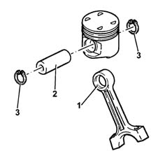
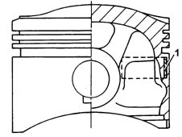
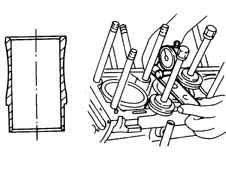

DESCRIPTION OF COMPONENTS
- Path
- Descriptions > 10 ENGINE > 1028 PISTONS AND CONNECTING RODS > 1028H PISTONS AND CONNECTING RODS > DESCRIPTION OF COMPONENTS
- Kind
- system description
- Applies to
- engines: 3.0 V6, 3.2 V6; all production periods
- Interactive page
- https://sloeber94.github.io/elrnDB-lThss/en/#/613179
Applies to: engines: 3.0 V6, 3.2 V6; all production periods
CONNECTING RODS
Specifications
The connecting rods are in hardened steel with a copper bush (1) press-fitted for connection to piston pin (2).
The floating pins are held in place by two flexible expansion pins (3) that are seated in special grooves made on the piston hubs.

PISTONS
Specifications
The pistons are in silicon aluminium alloy with autothermal inserts(1). They are divided into three size categories and bear an arrow on the crown that indicates the engine rotation direction for correct installation.
The piston crown is concave with four grooves that prevent interference with the valve heads.

CYLINDER LINERS/BORES
Specifications
These are cast iron and supported at the bottom. Coolant flows directly over their outsides for more rational heat dissipation (wet sleeves).
When refitting the engine, check that cylinder liner protrusion from the crankcase is within specified limits.
